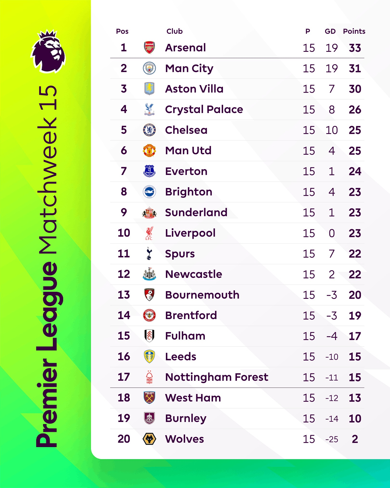
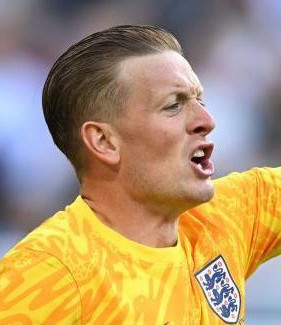
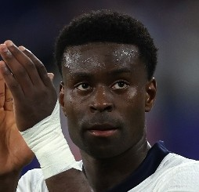
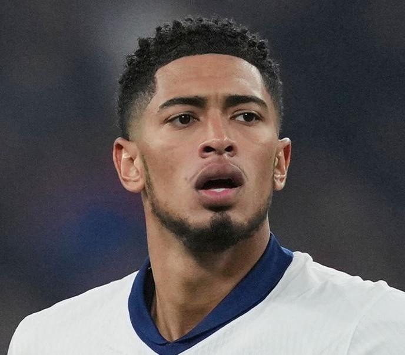
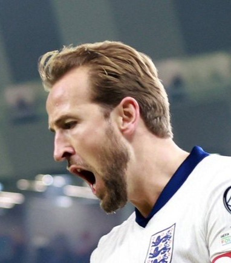

🏆 25/26 賽季英超數據一覽
目前的排名情況：

🎯 英超射手榜 (Top Goalscorers)
- 厄林·哈蘭德 (Erling Haaland) 15球
- 伊戈爾·蒂亞戈(Igor Thiago) 11球
- 尚-菲利普·馬特塔(Jean-Philippe Mateta) 7球
- 雨果·埃基蒂克(Hugo Ekitike) 7球
數據截至2025/12/14
🦁🦁🦁 三獅軍團：英格蘭國家隊的榮耀與挑戰
英格蘭國家男子足球隊是現代足球的鼻祖。他們以「三獅軍團」為標誌，是世界上最受關注的國家隊之一，其歷史雖然坎坷，但仍擁有世界盃的最高榮譽。
國家隊主要榮譽：
- 國際足總世界盃 (FIFA World Cup) 1966 冠軍
- 歐洲國家盃 (UEFA European Championship) 2020 亞軍
- 國際足總世界盃 1990 殿軍
官方文件：
如果您對英超聯賽的詳細規則感興趣，可以下載官方文件： 下載英超聯賽規則 (PDF)
🏟️ 經典球場與德比激情
英格蘭的足球文化體現在其歷史悠久的球場和充滿火藥味的德比戰中。這些比賽不僅是體育競爭，更是城市和地區榮耀的象徵。

🔥 著名德比戰：
- 新國家德比 (National Derby) 利物浦 vs 曼城：近代最強的英超球隊。
- 雙紅會 (North West Derby) 曼聯 vs 利物浦：英格蘭最重量級的對決。
- 北倫敦德比 (North London Derby) 兵工廠 vs 托特納姆熱刺：倫敦的榮耀之戰。
- 曼徹斯特德比 (Manchester Derby) 曼聯 vs 曼城：城市主權的爭奪。
📸 戰術演示：4-3-3 實戰陣容
4-3-3 陣型站位。

GK Pickford
LB O'Reilly

CB Guehi
CB Stones
RB James

CM Bellingham


LW Foden

ST Kane
RW Saka
⭐ 歷史頂級射手數據
| 排名 | 球員 | 時期 | 進球數 |
|---|---|---|---|
| 1 | Wayne Rooney | 2003–2018 | 53 |
| 2 | Bobby Charlton | 1958–1970 | 49 |
| 3 | Harry Kane | 2015–至今 | 48+ |
| 數據截至 2025 年，代表英格蘭出戰的正式比賽進球。 | |||